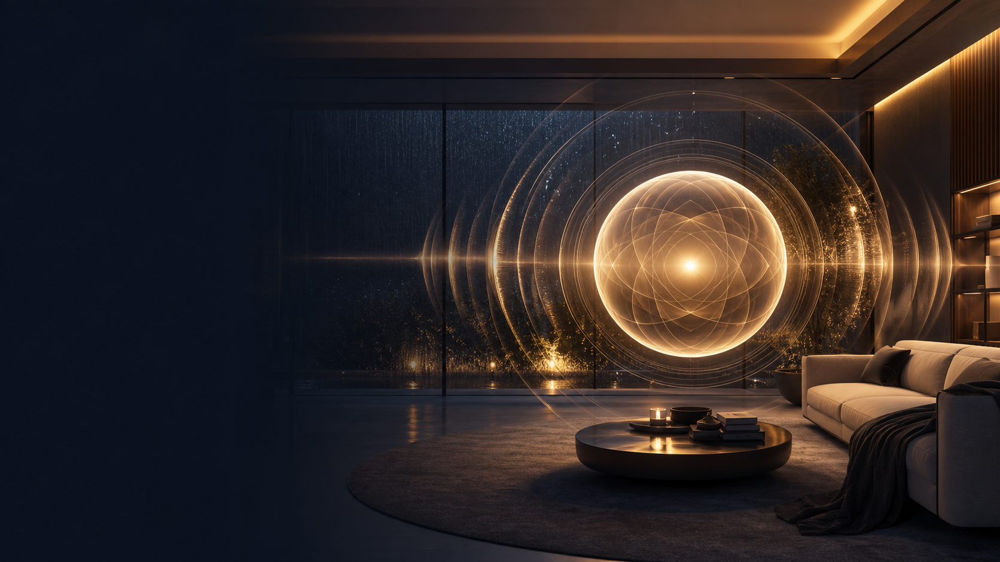
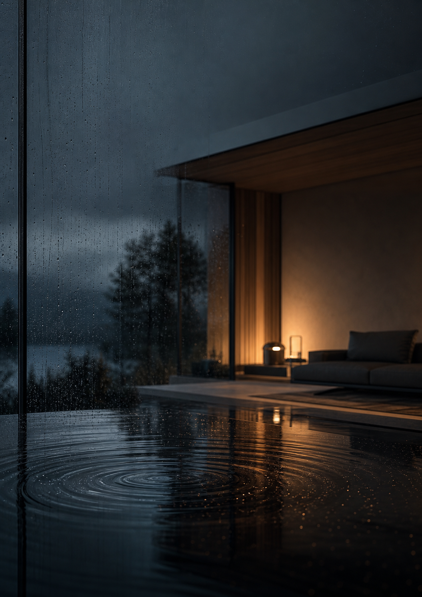
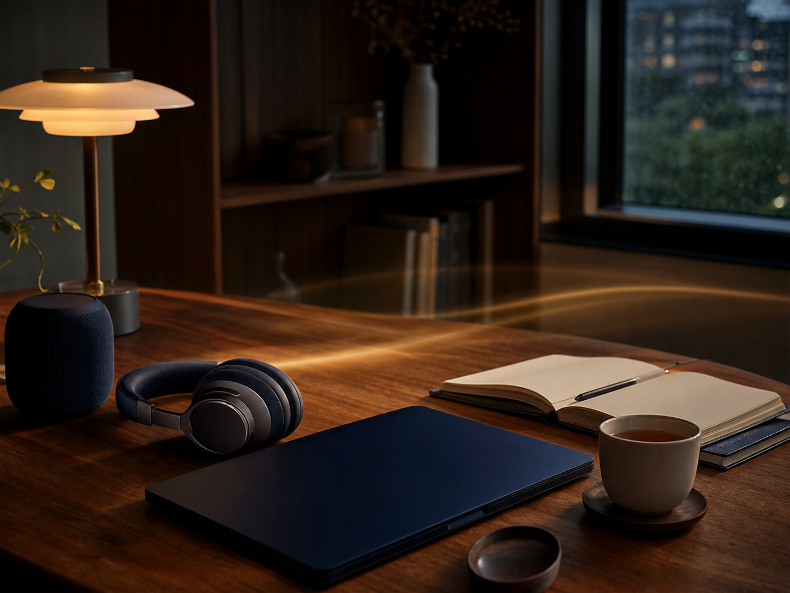
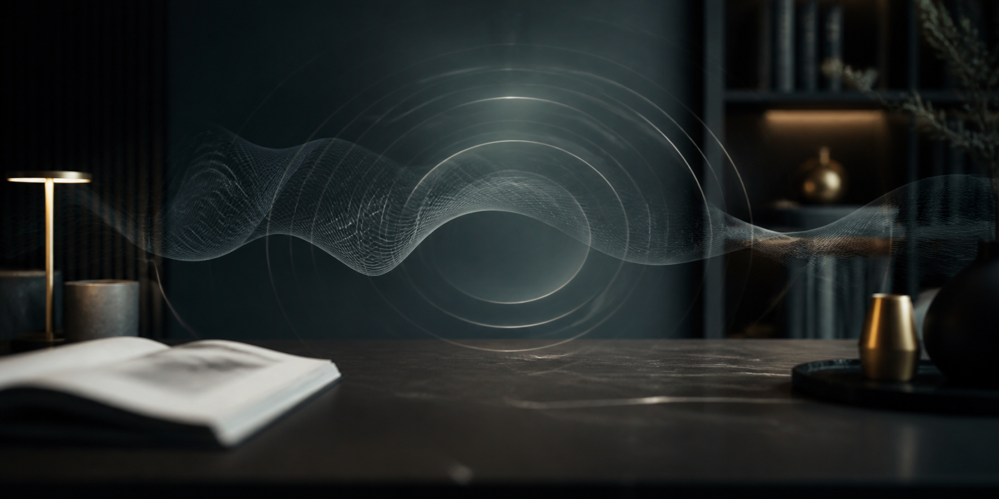

選擇情境
Choose the moment
需要短時間聆聽、長時間背景音樂，或視聽體驗？先選擇最貼近當下需求的版本。
Choose short listening, extended background music or an audio-visual experience.

OF-001 · SPATIAL FIELD COMMAND
OF-001《空間覆蓋指令》是 Oculus Fontis 的旗艦聲音與視聽系列。適合居家、工作、閱讀與安靜休息時播放，讓聲音成為整理空間節奏的日常工具。
OF-001 Spatial Field Command is the flagship audio and audio-visual collection by Oculus Fontis, created for home, work, reading and quiet personal time.
O.F. Studio 是主要創作與產品線；O.F. Property 是獨立的不動產子網站。兩者共享 Oculus Fontis 對「清楚、秩序與信任」的核心要求。
O.F. Studio is the main creative and product line. O.F. Property lives on its own dedicated subsite. Both share the same commitment to clarity, order and trust.

OF-001 結合清晰人聲、原創聲音結構、背景音樂與視覺影像，建立適合不同情境的播放體驗。
你可以選擇最直接的核心錄音、帶有音樂的長時間版本，或具視覺影像的居家版本。產品是身心靈支持工具，不取代任何醫療、心理或專業服務。
OF-001 combines clear spoken voice, original sound structures, background music and visual imagery across several listening formats.
Choose the direct core recording, an extended music edition, or an audio-visual home experience. This is a spiritual support tool and does not replace medical, psychological or professional care.
五種版本，依播放時間、聲音層次與視覺需求選擇。
Five editions for different durations, sound layers and visual needs.
適合居家、工作、閱讀、創作或安靜休息。
For home, work, reading, creation or quiet rest.
透過 Gumroad 購買與下載；結帳頁會依地區顯示幣別。
Purchase and download through Gumroad; local currency may appear at checkout.
三個步驟即可開始。若播放時感到不舒服，請降低音量、停止播放並依自身狀態決定是否繼續。
Start in three steps. If you feel uncomfortable, lower the volume or stop and decide whether continuing is right for you.
需要短時間聆聽、長時間背景音樂，或視聽體驗？先選擇最貼近當下需求的版本。
Choose short listening, extended background music or an audio-visual experience.
使用手機、電腦、耳機或喇叭。視聽版建議使用較大的螢幕。
Use a phone, computer, headphones or speakers. A larger screen suits visual editions.
不需要追求特定感受。把注意力放回工作、閱讀、休息或當下的生活。
No special feeling is required. Return your attention to work, reading, rest or daily life.
價格依 2026 年 7 月最新版產品頁更新。Gumroad 結帳時可能顯示所在地幣別與稅額。
Prices reflect the July 2026 product page. Gumroad may display local currency and applicable tax at checkout.
2:42 · MP3 + LOSSLESS WAV · ISRC TWP012680145
最清晰、最直接的核心錄音，不加入背景音樂。適合短時間播放與專注聆聽。
The clearest direct core recording, without background music. Made for short sessions and focused listening.
2:42 + 2:47 · 1080P · INCLUDES EDITION 01
一次取得核心人聲融合版與史詩層疊版兩種視聽比例，並包含 Edition 01 音訊。
Two audio-visual experiences: core voice fusion and epic layered edition, plus Edition 01 audio.
32:16 · MP3 + LOSSLESS WAV · ISRC TWP012680146
十段指令結構融入十首背景音樂，適合居家、工作、閱讀與較長時間播放。
Ten command structures integrated into ten music sections for home, work, reading and extended listening.
10:30 · 1080P · INCLUDES EDITION 03
長時間音樂結合居家視覺影像，並包含 Edition 03 音訊，適合大螢幕播放。
Extended music paired with home visual imagery, including Edition 03 audio. Designed for larger screens.
一次取得完整五版本，以及雙語使用說明。適合希望保留所有聲音與視聽形式的使用者。
All five audio and audio-visual editions plus the bilingual user guide in one complete collection.
價格說明：以上為美元標價。當地幣別換算、稅額與付款方式以 Gumroad 結帳頁為準。
Pricing note: Prices are listed in USD. Local conversion, tax and payment methods are shown by Gumroad at checkout.

OF-001 的版本設計涵蓋短時間專注、長時間背景播放，以及具畫面的視聽體驗。你可以依照空間、設備與當天狀態選擇。
OF-001 covers short focused listening, extended background playback and visual experiences. Choose according to your space, device and the moment.
目前可由 YouTube 認識 Oculus Fontis；未來將在此加入 Gumroad 作品預覽、音樂試聽與新系列。
Discover Oculus Fontis on YouTube now. Gumroad previews, listening samples and new series will be added here.

先從公開內容認識聲音、空間與創作方法。
Begin with public videos on sound, space and the creative process.
O.F. Studio 將聲音、影像與結構思考結合，製作可在真實生活中播放與體驗的數位作品。
O.F. Studio combines sound, imagery and structural thinking into digital work made for real life.
創辦人長期投入身心靈探索與創作，同時具地政士專業執照及 13 年科技業國際商務經驗。Oculus Fontis 因此同時重視直覺與結構、體驗與責任、創意與清楚交付。
The founder brings long-term spiritual practice and creation together with a Land Scrivener license and 13 years of international business experience in tech. Oculus Fontis values intuition and structure, experience and responsibility, creativity and clear delivery.
以下是最常見的使用與購買問題。如仍有疑問，請直接來信。
Common questions about use and purchase. Email us if you need more help.
不需要。請把 OF-001 視為一項聲音與視聽作品，依自己的感受與判斷使用。
No. Treat OF-001 as an audio and audio-visual work and use it with your own judgment.
想要直接短時間聆聽，選 01；希望有視覺與音樂，選 02；需要長時間背景播放，選 03；偏好居家視聽，選 04；希望一次保留所有版本，選 05。
Choose 01 for direct short listening, 02 for visual and music layers, 03 for extended background play, 04 for a home audio-visual experience, or 05 for everything.
完成 Gumroad 付款後，依平台指示下載。部分方案可依產品頁說明申請較高解析度版本。
Download through Gumroad after payment. Some editions may offer a higher-resolution option as described on the product page.
不是。本產品為身心靈支持與數位視聽作品，不構成醫療、心理、法律建議或療效承諾。
No. This is a spiritual support and digital media product. It does not provide medical, psychological or legal advice, or promise outcomes.
主站專注身心靈與數位創作；不動產服務使用獨立子網站，避免兩種需求混在一起。
The main site focuses on spiritual and digital creation. Property services live on a dedicated subsite.
空間覆蓋系列、原創聲音、視聽作品與未來的 Gumroad 數位產品。
Spatial Field series, original sound, audio-visual work and future Gumroad products.
回到主網站首頁Back to main site ↑土地登記、不動產權利與租賃管理等專業服務。此事業線已獨立至子網站。
Professional land registration, property rights and rental-management services on a dedicated subsite.
前往不動產子網站Visit property subsite ↗客服回覆時間：週一至週五 10:00–18:00（台灣時間）。
Response hours: Monday to Friday, 10:00–18:00 Taiwan time.
本產品為身心靈支持工具與數位視聽作品，不涉及任何醫療、心理或法律建議，亦不構成診斷、治療或療癒承諾。如有健康需求，請諮詢合格專業人士。本產品作用機制目前尚無主流科學研究進行系統性驗證。購買者應以自主判斷體驗，並為自身使用決定負責。數位產品依 Gumroad 產品頁所載政策不提供退款。
This product is a spiritual support tool and digital media work. It does not constitute medical, psychological or legal advice, diagnosis, treatment or a healing guarantee. Please consult a qualified professional for health-related needs. Its proposed mechanism has not been systematically verified by mainstream scientific research. Use with personal discernment. Digital products are non-refundable under the policy stated on the Gumroad product page.